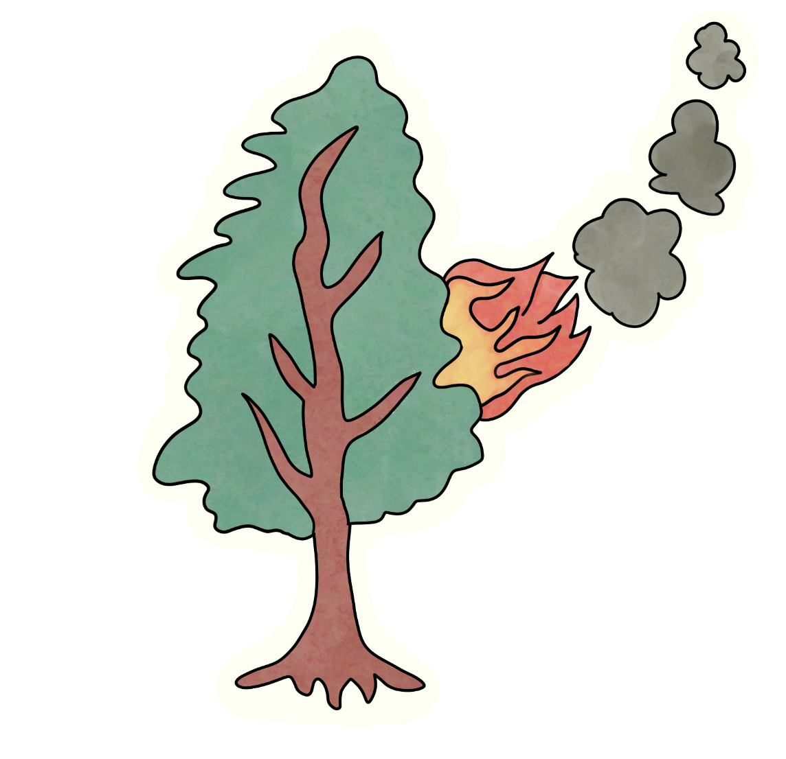

<div *ngIf="auth.user | async as user; else showLogin">
  <nav class="navbar navbar-expand-lg navbar-dark bg-success">
    
    <a class="navbar-brand" routerLink="auth" style="margin-left: 20px">Natural Event Tracker</a>
    <button class="navbar-toggler" type="button" data-toggle="collapse" data-target="#navbarSupportedContent" aria-controls="navbarSupportedContent" aria-expanded="false" aria-label="Toggle navigation">
      <span class="navbar-toggler-icon"></span>
    </button>

    <div class="collapse navbar-collapse" id="navbarSupportedContent">
      <ul class="navbar-nav mr-auto">
        <li class="nav-item active">
          <a class="nav-link" routerLink="home">Home <span class="sr-only">(current)</span></a>
        </li>
        <li class="nav-item active">
          <a class="nav-link" routerLink="account">Account <span class="sr-only">(current)</span></a>
        </li>
        <li class="nav-item active">
          <a class="nav-link" routerLink="about">About <span class="sr-only">(current)</span></a>
        </li>
      </ul>
      <form class="form-inline my-2 my-lg-0">
        <button class="btn btn-danger my-2 my-sm-0" (click)="logout()">Logout</button>
      </form>
    </div>
  </nav>

  <router-outlet></router-outlet>
</div>
<ng-template #showLogin>
  <p>Please login.</p>
  <button class="btn btn-outline-success my-2 my-sm-0" (click)="login()">Login with Google</button>
</ng-template>
